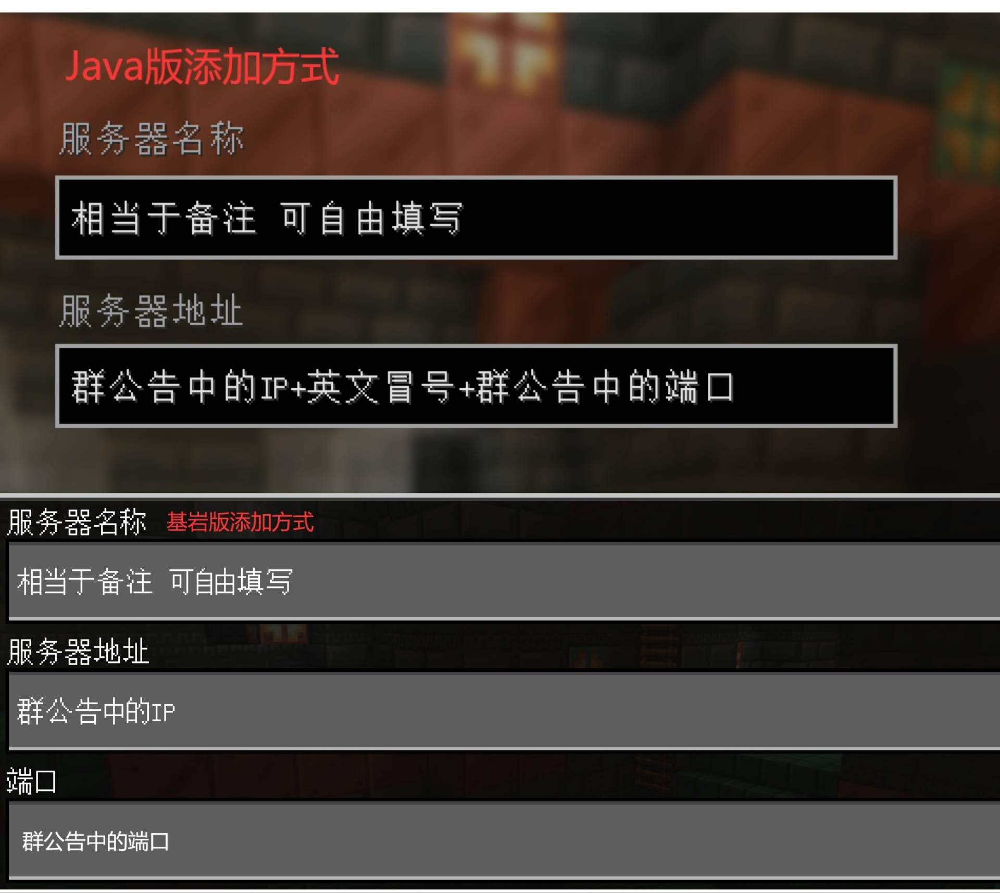

欢迎来到Fly Water服务器第七代！
这是一个纯生存、公益、Java基岩互通的MC Leaves服务器，可以活塞复制，破基岩，刷沙等
版本：JAVA1.7.0+ 基岩1.21.70+
（“+”表示该版本以上所有正式版本）
------
【重要】『服务器须知』
1.输入“@Huhobot /申请白名单 用户名”或私聊腐竹申请白名单
2.请尽快修改群昵称为游戏名，否则将被踢除
3.注册账号请输入“/reg 设置密码 重复密码”，登录请输入“/l 密码”
4.本服允许组建团体及建造群居地，须向腐竹报备
（IP见结尾）
------
【必看】『服务器公约』
（为了保证您及其他玩家的游戏体验，请遵守此公约）
一、服内所有可开关的机器都须设置开关，离开时【必须关闭】
二、禁止【抢夺、盗窃】他人资源或【毁坏】他人建筑
三、禁止【打压】新手
四、禁止【大型世吞】等对服务器地形或性能影响极大的机器
五、禁止【任何类型】的矿透、矿物追踪、自动挖矿、作弊端，种子破解等
六、请注意【文明用语】，否则将被【禁言1~24小时】或【踢出群聊】
七、如果【离开】群聊，您的【白名单】会被服务器清除
（违反【未指定惩罚】的公约】会被【踢出群聊】并【封禁游戏账号】）
------
群文件里有你需要的东西，快乐地游玩吧QWQ
（图片是添加服务器的方法）
服务器IP：FlyWater.9666.fun
端口：17538

Stone
更新于2025/08/23 22:32